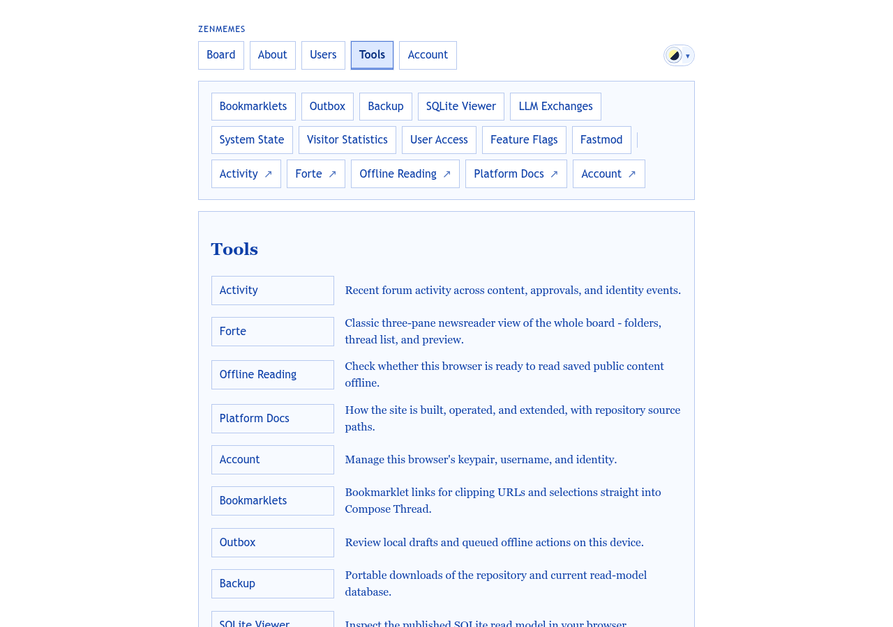
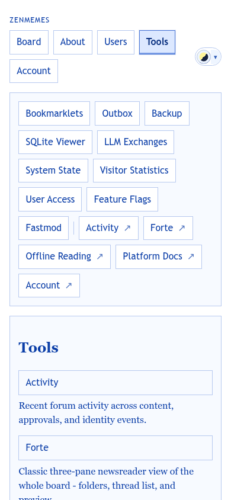

The launcher for 16 utilities, from personal ones (Outbox) to operator-only ones (Feature Flags). People should find their tool by what it is for.
templates/pages/tools.php · partials/tools_nav.php · Tools/ToolsPageSupport.php · public/assets/theme-nav-icons.css
ToolsPageSupport.theme-nav-icons.css; check Word97, Chicago and Midnight.

Your device
Reading
Community
Operator